Vérifier et corriger le graphe routier#
Après un import, le graphe routier contient souvent des anomalies issues des données sources : tronçons qui se croisent sans être coupés, tronçons qui devraient se toucher mais ne se touchent pas, tronçons dessinés dans le sens inverse de la route, branches d'une route utilisant le code de la route principale, etc.
Le plugin fournit des outils pour trouver ces anomalies et, quand c'est possible, pour les corriger automatiquement.
Méthode de travail#
Les anomalies doivent être corrigées dans une session d'édition, comme toute autre modification du graphe routier (voir Édition du graphe routier). Même après un import, utilisez une session d'édition : dessinez si besoin un grand polygone de session d'édition.
- Créez une session d'édition couvrant la zone à vérifier.
- Lancez l'algorithme Vérifier le graphe routier sur le schéma de la session d'édition. Il crée deux couches : une couche de points localisant chaque anomalie, et une couche de lignes montrant les anomalies pour lesquelles une ligne est utile.
- Examinez les anomalies, et corrigez-les :
- une par une avec un clic droit sur l'anomalie (voir Corriger une anomalie avec un clic droit),
- ou par lot : sélectionnez les anomalies à corriger automatiquement, puis lancez l'algorithme Corriger les anomalies du graphe routier avec l'option Entités sélectionnées uniquement. Les anomalies déjà corrigées sont ignorées,
- ou manuellement, pour les anomalies sans action de correction (voir la description de chaque contrôle).
- Relancez l'algorithme Vérifier le graphe routier pour contrôler le résultat.
- Fusionnez la session d'édition.
Si les couches de la session d'édition sont en mode édition, les corrections sont lancées dans leur transaction : enregistrez ensuite les modifications des couches, ou annulez-les. Sinon, les corrections sont enregistrées immédiatement.
La transaction est créée par QGIS quand le mode de transaction du projet est Groupes de transactions automatiques
(Propriétés du projet, Sources de données). Si les couches sont en mode édition sans transaction, par exemple
quand le mode édition a été activé avant la création des groupes de transactions, les corrections sont enregistrées immédiatement,
sauf si les couches ont des modifications qui ne sont pas encore enregistrées : enregistrez-les ou annulez-les d'abord.
Si besoin, fermez puis rouvrez le projet pour créer les groupes de transactions.
Algorithmes#
L'algorithme Vérifier le graphe routier lance les contrôles sur le schéma de la session d'édition (ou sur celui de production, uniquement pour avoir un aperçu des anomalies), pour toutes les routes ou seulement certaines, et crée les couches d'anomalies. Le paramètre avancé Options des contrôles (JSON) remplace les options par défaut des contrôles.
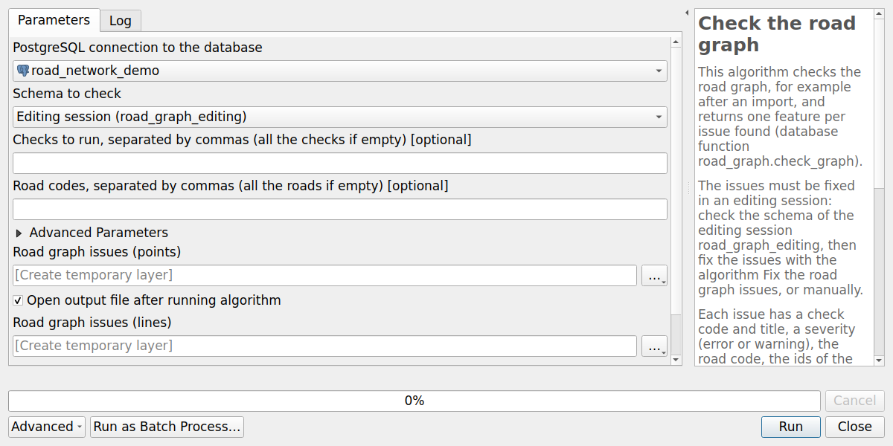
L'algorithme Corriger les anomalies du graphe routier corrige les anomalies de l'une de ces couches, dans l'ordre de leurs codes de contrôle, avec leur action de correction. Cochez l'option Entités sélectionnées uniquement pour corriger seulement les anomalies sélectionnées. Les anomalies sans action de correction, et les anomalies déjà corrigées, sont ignorées.
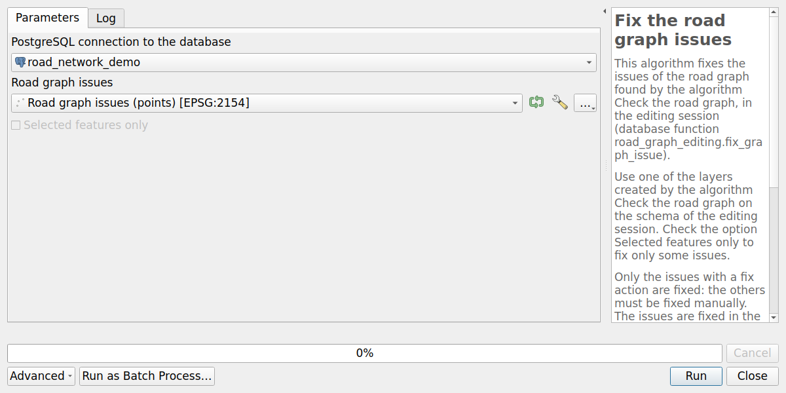
Corriger une anomalie avec un clic droit#
Les couches créées par l'algorithme Vérifier le graphe routier ont trois actions.
Utilisez l'outil Identifier les entités et faites un clic droit sur une anomalie dans la carte,
ou utilisez l'outil Exécuter l'action d'entité de la barre d'outils Attributs :
- Corriger cette anomalie : corrige l'anomalie avec son action de correction. Rien n'est fait si l'anomalie n'a pas d'action de correction,
- Choisir la correction de cette anomalie... : choisissez l'action de correction parmi les actions du contrôle, puis l'anomalie est corrigée. Par exemple, pour le contrôle G01, couper les tronçons ou les marquer comme non connectés (pont), et dans ce cas choisir le tronçon à marquer,
- Sélectionner les tronçons de cette anomalie : sélectionne les tronçons de l'anomalie dans la couche des tronçons de la session d'édition
(
road_graph_editing.edges) et zoome dessus, par exemple pour corriger l'anomalie manuellement.
Dans cet exemple des données de test, les routes d'un échangeur croisent la N814 sur des ponts sans y être connectées, et une route d'accès arrive sur le giratoire sans le découper. Cette dernière anomalie a déjà été corrigée : elle est affichée en gris. Un clic droit sur un croisement de la N814 affiche les actions :
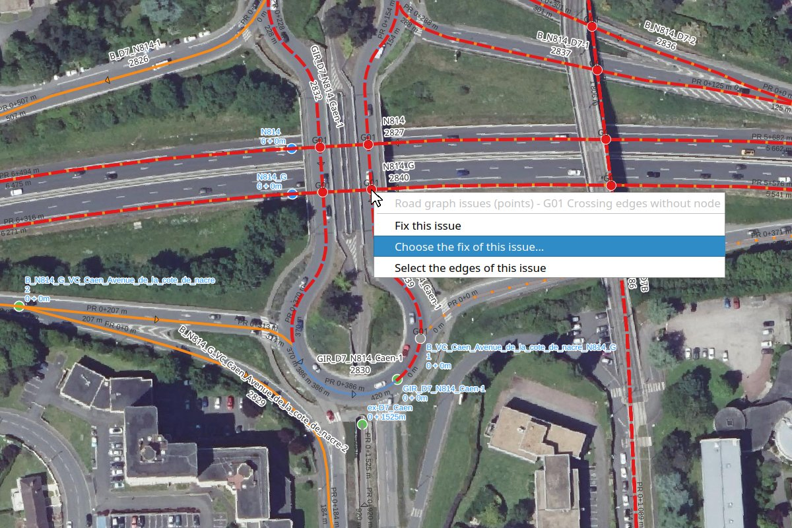
L'action Choisir la correction de cette anomalie... liste les actions de correction du contrôle :
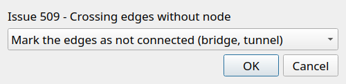
Pour l'action mark_as_bridge, choisissez ensuite le tronçon qui ne doit pas être connecté, ou tous les tronçons :
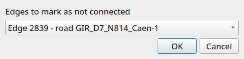
Le résultat de la correction est stocké dans les champs fix_status (Corrigée, Déjà corrigée ou Non corrigée)
et fix_message des couches de points et de lignes des anomalies, et les anomalies corrigées sont affichées en gris.
Les couches de tronçons de la session d'édition sont rafraîchies.
Les titres des contrôles et des actions, les libellés des actions de correction et des statuts et les messages sont traduits dans la langue de QGIS. Les messages détaillés renvoyés par la base de données sont en anglais.
Contrôles#
Chaque anomalie a :
- un code de contrôle et un titre, et une gravité :
errorouwarning, - le code de la route, et les identifiants des tronçons, nœuds et bornes concernés,
- des détails, par exemple une distance ou un angle,
- l'action de correction qui peut la corriger automatiquement, et ses paramètres, ou rien si l'anomalie doit être corrigée manuellement.
Les contrôles sont numérotés dans l'ordre recommandé des corrections : l'algorithme Corriger les anomalies du graphe routier corrige les anomalies dans cet ordre.
Chaque contrôle ci-dessous est illustré par un schéma de l'anomalie et de sa correction.
| Code | Anomalie | Correction |
|---|---|---|
| G01 | Tronçons qui se croisent ou se touchent sans nœud | cut_edges ou mark_as_bridge |
| G02 | Tronçon qui se termine près d'un autre tronçon sans y être raccordé (jonction en T) | extend_edge |
| G03 | Nœuds proches l'un de l'autre | merge_nodes |
| G04 | Nœud inutile : sans tronçon, ou entre deux tronçons d'une même route | delete_node |
| G05 | Tronçons dans le sens inverse de la route | reverse_edges |
| G06 | Tronçons précédent et suivant incohérents avec la géométrie | relink_edges |
| G07 | Route avec des branches : plus de deux tronçons de la route à un nœud | manuelle |
| G08 | Tronçons parallèles d'une même route, par exemple deux chaussées | manuelle |
| G09 | Tronçon court | collapse_edge |
| G10 | Première borne qui n'est pas au début de la route | move_marker |
| G11 | Bornes qui ne sont pas dans l'ordre de la route | manuelle |
Pour corriger une anomalie avec une autre action que celle proposée, ou pour choisir l'action d'une anomalie sans action,
basculez en mode édition la couche de points créée par l'algorithme Vérifier le graphe routier,
et modifiez le champ fix_action (et fix_params si besoin) avant de lancer l'algorithme Corriger les anomalies du graphe routier.
G01 : Tronçons qui se croisent sans nœud#
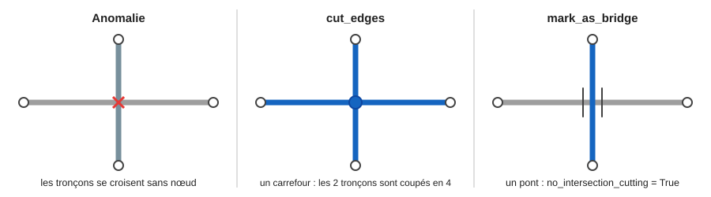
Deux tronçons qui se croisent ou se touchent doivent être découpés par un nœud, sauf s'ils ne sont pas connectés,
par exemple sur un pont ou dans un tunnel : les tronçons dont le champ no_intersection_cutting vaut True
sont ignorés (voir Tronçons qui ne doivent pas être coupés).
Le contrôle renvoie une anomalie pour chaque point où deux tronçons se croisent ou se touchent,
si ce point n'est pas le point de début ou de fin des deux tronçons (tolérance de 50 cm, comme les triggers qui découpent les tronçons).
Le champ details donne :
crossing_type:touching: le point est le point de début ou de fin de l'un des tronçons, par exemple une route qui arrive sur une autre route sans la découper. Les tronçons sont sûrement connectés : l'action de correction estcut_edges,crossing: les tronçons se croisent. Ils peuvent être sur un pont : l'action de correction doit être choisie pour chaque anomalie,
road_codesetroad_classes: les codes et classes des routes des deux tronçons, par exemple une autoroute qui croise une route départementale est probablement un pont,angle: l'angle entre les deux tronçons, de 0 (parallèles) à 90 degrés (perpendiculaires).
Actions de correction :
cut_edges: crée un nœud au point, ou utilise le nœud existant à moins de 50 cm de celui-ci, ce qui découpe les tronçons qui y passent,mark_as_bridge: met le champno_intersection_cuttingàTruepour les deux tronçons, ou seulement pour le tronçon donné par la cléedge_idajoutée àfix_params, par exemple{"point": "SRID=2154;POINT(455144.6 6905485.8)", "edge_ids": [2839, 2841], "edge_id": 2839}.
Si la plupart des croisements sont des ponts, ou sont des carrefours, réglez l'option crossing_fix_action
du contrôle sur mark_as_bridge ou cut_edges : les anomalies de type crossing reçoivent alors cette action de correction.
Vérifiez ensuite attentivement le résultat.
1 2 3 | |
G02 : Tronçon qui se termine près d'un autre tronçon#
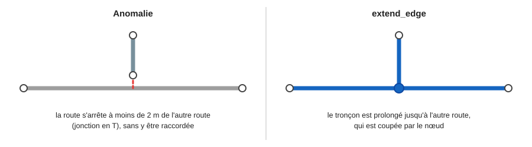
Une route qui arrive sur une autre route doit y être raccordée. Dans les données sources, elle s'arrête souvent quelques décimètres avant l'autre route, ou un peu au-delà.
Le contrôle renvoie une anomalie pour chaque extrémité libre d'un tronçon, c'est-à-dire une extrémité à laquelle aucun autre tronçon n'est raccordé,
située à moins de la tolérance d'un autre tronçon : option tolerance, 2 m par défaut.
Sont ignorés :
- les tronçons raccordés à l'extrémité opposée du tronçon, par exemple son tronçon suivant s'il est très court,
- les tronçons croisés par le tronçon près de son extrémité libre : le tronçon va un peu au-delà de l'autre tronçon. Le croisement est trouvé par le contrôle G01.
Quand deux extrémités libres sont proches l'une de l'autre, une seule anomalie est renvoyée.
Le point à rejoindre est le point le plus proche de l'autre tronçon, ou son point de début ou de fin
s'il est à moins de 50 cm de celui-ci. Le champ details donne les codes des routes des deux tronçons,
la distance, et le join_type : edge (milieu de l'autre tronçon) ou edge_end.
Action de correction :
extend_edge: raccorde l'extrémité libre du tronçon au point à rejoindre :- si le point à rejoindre est le point de début ou de fin de l'autre tronçon, l'extrémité libre est raccordée à son nœud, et le nœud de l'extrémité libre est supprimé,
- sinon, si l'extrémité libre est à moins de 50 cm de l'autre tronçon, le nœud de l'extrémité libre est déplacé jusqu'au point à rejoindre,
- sinon, le point à rejoindre est ajouté à l'extrémité libre du tronçon, et le nœud de l'extrémité libre suit.
Dans ces deux derniers cas, les triggers y découpent l'autre tronçon. Comme pour toute géométrie du graphe routier, les coordonnées sont arrondies à 10 cm.
1 2 3 4 | |
G03 : Nœuds proches l'un de l'autre#
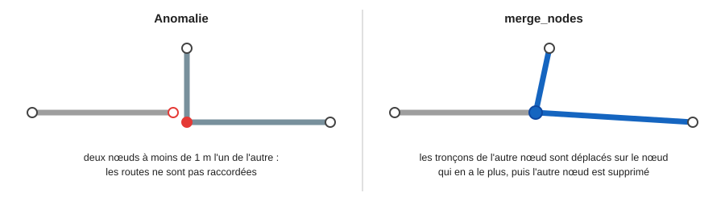
Deux nœuds à quelques centimètres ou décimètres l'un de l'autre devraient en général être le même nœud : les routes qui y arrivent ne sont pas connectées dans le graphe.
Le contrôle renvoie une anomalie pour chaque paire de nœuds à moins de la tolérance l'un de l'autre :
option tolerance, 1 m par défaut. Les nœuds reliés par un tronçon sont ignorés : ce tronçon est très court,
et doit être examiné avec le contrôle des tronçons courts.
Le nœud à conserver est le nœud qui a le plus de tronçons, pour déplacer le moins de tronçons possible,
ou sinon le nœud qui a le plus petit identifiant, c'est-à-dire le nœud le plus ancien.
C'est le premier nœud de node_ids, et le point de l'anomalie.
Le champ details donne les codes des routes des tronçons des deux nœuds et la distance.
Beaucoup de ces anomalies sont aussi trouvées par le contrôle G02, quand un tronçon se termine près du point de début ou de fin d'un autre tronçon : elles sont ignorées une fois corrigées par G02.
Action de correction :
merge_nodes: déplace les points de début et de fin des tronçons de l'autre nœud vers le nœud à conserver, puis supprime l'autre nœud.
G04 : Nœud inutile#
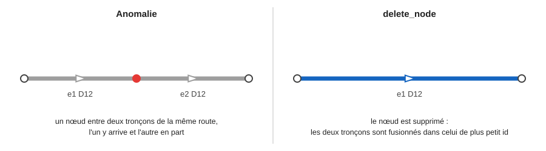
Un nœud est utile à une intersection, ou au début ou à la fin d'une route. Les données sources contiennent souvent d'autres nœuds, par exemple là où les objets sources d'une route étaient découpés : ces nœuds découpent inutilement la route en plusieurs tronçons.
Le contrôle renvoie une anomalie, avec la gravité warning, pour chaque nœud :
- sans tronçon (
node_type:no_edge), seulement quand toutes les routes sont vérifiées, - ou entre deux tronçons d'une même route (
node_type:two_edges) : un tronçon arrive au nœud, et l'autre en part. Sont ignorés les tronçons avec des valeurs différentes deno_intersection_cutting, les deux tronçons qui forment une boucle, et les tronçons qui se croisent, par exemple une bretelle en boucle d'un échangeur.
Deux tronçons d'une même route qui arrivent tous les deux au nœud, ou qui en partent tous les deux, sont de sens opposés : cette anomalie est trouvée par le contrôle des tronçons inversés.
Action de correction :
delete_node: supprime le nœud. Les triggers fusionnent les deux tronçons dans le tronçon qui a le plus petit identifiant, qui conserve ses autres champs, par exempleid_source.
Corrigez d'abord les anomalies des contrôles G01 et G03 : sinon les triggers découperaient le tronçon fusionné à ses croisements avec les autres tronçons, qui peuvent être des ponts, ou le raccorderaient aux nœuds proches. Dans ce cas, la correction renvoie une erreur et rien n'est modifié.
G05 : Tronçons dans le sens inverse de la route#
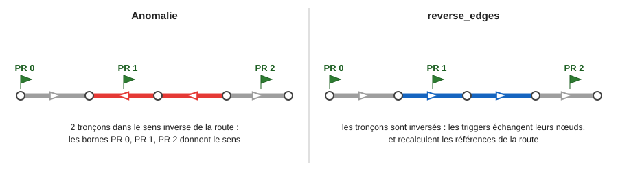
Les tronçons d'une route doivent être dessinés dans le sens de la route, de sa première borne à sa dernière : les références (borne et abscisse) et l'ordre des tronçons en dépendent.
Le contrôle regroupe les tronçons de chaque route en séquences : deux tronçons se suivent à un nœud où il n'y a que ces deux tronçons de la route. Le sens d'une séquence est donné :
- par l'ordre des bornes de la route situées le long de celle-ci (
reason:markers), à moins de l'optionmarker_tolerancede celle-ci, 10 m par défaut, - ou sinon, sans assez de bornes, par le sens de la plus grande partie de la longueur de ses tronçons (
reason:neighbours).
Les bornes des giratoires ne sont pas utilisées, et les giratoires, dont les tronçons forment un anneau, ne sont pas vérifiés.
Le sens d'un tronçon est donné par sa géométrie, pas par ses champs start_node et end_node.
Le contrôle renvoie une anomalie pour chaque groupe de tronçons consécutifs dans le sens inverse de leur séquence.
Une route entière dessinée dans le sens inverse de ses bornes est aussi trouvée.
Le champ details donne la reason, le nombre de tronçons et leur longueur, et le nombre de bornes consécutives
dans le sens de la route (markers_in_road_direction) et dans le sens inverse.
Action de correction :
reverse_edges: inverse la géométrie des tronçons. Les triggers échangent leurs nœuds de début et de fin, et recalculent leurs tronçons précédent et suivant et les références de la route.
Une géométrie peut aussi être inversée manuellement, par exemple avec l'outil QGIS Reverse Line.
1 2 3 4 | |
G06 : Tronçons précédent et suivant incohérents avec la géométrie#
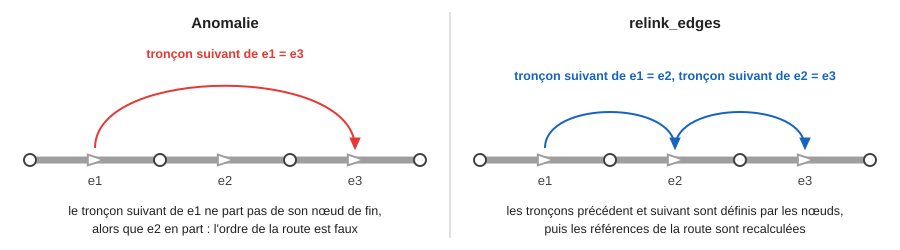
Les champs previous_edge_id et next_edge_id des tronçons donnent l'ordre des tronçons de la route,
utilisé pour calculer les références. Ils sont renseignés par les triggers, mais peuvent être faux après un import,
ou après des modifications faites sans les triggers. Les références de toute la route sont alors fausses.
Le contrôle renvoie une anomalie pour chaque route ayant des tronçons dont le tronçon suivant :
- ne commence pas au nœud de fin du tronçon, alors qu'un autre tronçon de la route y commence,
- ou est raccordé à un autre tronçon, ou au tronçon de sens opposé.
Le tronçon précédent est vérifié de la même façon. Les autres liens, à travers une interruption de la route, par exemple de part et d'autre
d'un giratoire, sont conservés. Les giratoires sont ignorés. Le champ details donne le nombre de tronçons et,
pour chaque tronçon, ses tronçons précédent et suivant (previous_edge_id, next_edge_id) et ceux attendus
(expected_previous_edge_id, expected_next_edge_id).
Action de correction :
relink_edges: définit les tronçons précédent et suivant attendus de la route : les tronçons raccordés par les nœuds, ou aucun lien. Puis les références de la route sont recalculées.
Corrigez d'abord les anomalies des contrôles G03 et G05 : deux nœuds proches ou un tronçon inversé cassent les liens. Les contrôles suivants utilisent l'ordre des tronçons.
G07 : Route avec des branches#
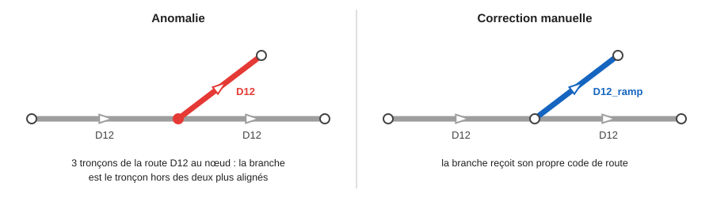
Une route doit être une ligne : ses tronçons se suivent, sans branches. Les bretelles d'un échangeur ou d'un giratoire, ou les deux chaussées d'une route, doivent avoir leur propre code de route. Sinon l'ordre des tronçons de la route, et donc les références, ne peuvent pas être calculés.
Le contrôle renvoie une anomalie pour chaque nœud ayant plus de deux tronçons d'une même route. Les giratoires sont ignorés.
La ligne principale de la route au nœud est donnée par le tronçon qui arrive au nœud et le tronçon qui en part
qui sont les plus alignés : les autres tronçons sont les branches. Le champ details donne le nombre de tronçons
au nœud (edge_count), et les identifiants des tronçons de la ligne principale (main_edge_ids) et des branches
(branch_edge_ids). La ligne de l'anomalie montre les branches.
Il n'y a pas d'action de correction : donnez un autre code de route aux tronçons des branches, par exemple une nouvelle route pour une bretelle. Vérifiez la ligne principale proposée par le contrôle, surtout quand les tronçons ne sont pas dans le sens de la route (contrôle G05).
G08 : Tronçons parallèles d'une même route#
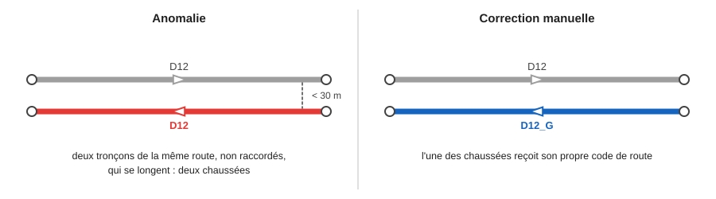
Les deux chaussées d'une route doivent avoir leur propre code de route. Quand elles utilisent le même code sans être connectées, le contrôle G07 ne les trouve pas.
Le contrôle renvoie une anomalie, avec la gravité warning, pour chaque paire de tronçons d'une même route,
non raccordés par un nœud, qui se longent :
- à moins de l'option
tolerancel'un de l'autre, 30 m par défaut, - sur au moins l'option
min_length, 10 m par défaut.
Les tronçons qui ne font que se rapprocher sont ignorés, par exemple les tronçons d'une route de part et d'autre d'un giratoire :
chaque tronçon doit longer l'autre sur au moins la longueur minimale. Les giratoires sont ignorés.
Le champ details donne la distance entre les tronçons et la longueur sur laquelle ils sont parallèles
(parallel_length). La ligne de l'anomalie montre les parties parallèles des tronçons.
Il n'y a pas d'action de correction : donnez un autre code de route à l'une des chaussées. Une route qui revient près d'elle-même, par exemple un virage en épingle, peut aussi être trouvée : dans ce cas, il n'y a rien à corriger.
G09 : Tronçon court#
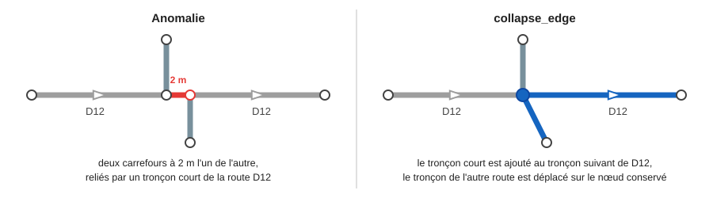
Un tronçon très court vient souvent de la numérisation : par exemple deux intersections à quelques décimètres l'une de l'autre au lieu d'un carrefour, ou un petit morceau de route laissé au bout d'un tronçon.
Le contrôle renvoie une anomalie pour chaque tronçon plus court que l'option min_length, 3 m par défaut.
Les tronçons des giratoires, et les tronçons qui arrivent à un giratoire ou qui en partent, sont souvent courts :
ils sont ignorés, sauf s'ils sont réduits à un point (moins de 10 cm, la précision des coordonnées).
La gravité est error pour un tronçon réduit à un point, sinon warning.
Le champ details donne la length, le nombre d'autres tronçons aux nœuds de début et de fin
(start_edge_count et end_edge_count), et is_roundabout_edge.
Action de correction :
collapse_edge: supprime le tronçon et fusionne ses deux nœuds dans le nœud à conserver : le nœud qui a le plus de tronçons, ou sinon le nœud qui a le plus petit identifiant, qui est le premier nœud denode_ids. À l'autre nœud, le tronçon suivant ou précédent de la même route est prolongé avec la géométrie du tronçon court jusqu'au nœud à conserver : la géométrie et la longueur de la route sont conservées. Les points de début et de fin des tronçons des autres routes sont déplacés vers le nœud à conserver : leur dernier segment est réorienté, de moins que la longueur du tronçon court.
Le seul tronçon d'une route n'a pas d'action de correction : la route n'aurait plus aucun tronçon.
G10 : Première borne qui n'est pas au début de la route#
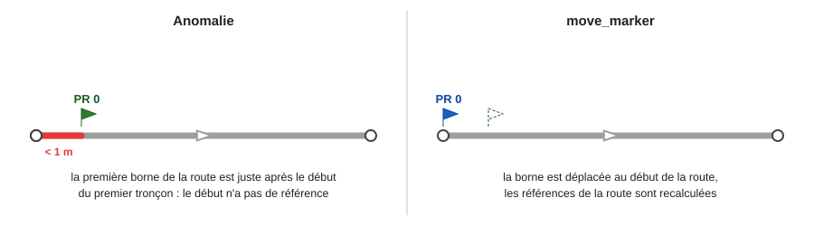
La première borne d'une route est la borne qui a le plus petit code et la plus petite abscisse : c'est souvent la borne 0, mais ce peut être une borne virtuelle avec un code plus élevé. Elle doit être au point de début du premier tronçon de la route, le tronçon sans tronçon précédent. Quand elle est quelques centimètres après, le début de la route n'a pas de référence.
Le contrôle renvoie une anomalie pour chaque route dont la première borne est à plus de 5 cm du début de la route.
Les giratoires sont ignorés. La gravité est error si le début du premier tronçon n'a pas de référence, sinon warning.
Le champ details donne les marker_code, marker_abscissa et is_virtual de la borne, sa distance
au début de la route, sa position le long du premier tronçon (position_on_edge), et has_start_reference.
Action de correction :
move_marker: déplace la borne au début de la route. Les références de la route sont recalculées. Elle n'est proposée que si la borne est à moins de l'optiontolerancedu début de la route, 1 m par défaut. Au-delà, vérifiez la route manuellement : la borne peut être juste, et le premier tronçon faux, par exemple quand la route est dans le sens inverse (contrôle G05).
G11 : Bornes qui ne sont pas dans l'ordre de la route#
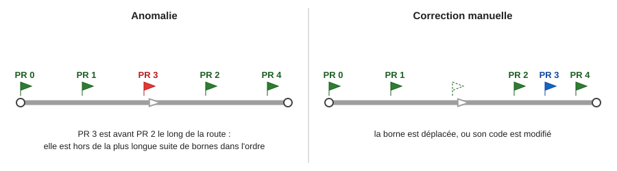
Triées par code et abscisse, les bornes d'une route doivent se suivre le long de la route : sinon, les références calculées à partir d'elles sont fausses.
La position de chaque borne le long de sa route est la longueur cumulée de la route à son tronçon le plus proche,
à moins de l'option marker_tolerance de celui-ci, 50 m par défaut. Le contrôle conserve la plus longue séquence
de bornes dans l'ordre de la route, deux bornes pouvant être à la même position (tolérance de 1 m),
par exemple une borne virtuelle et la borne du code suivant avec la même référence.
Il renvoie une anomalie pour chaque autre borne (issue_type : order), et pour chaque borne éloignée de sa route
(far_from_road) ou dont le tronçon le plus proche n'a pas de référence (edge_without_reference). Les giratoires sont ignorés.
Le champ details donne le code, l'abscisse, le type et la position de la borne, et le code et la position
des bornes précédente et suivante dans l'ordre de la route.
Il n'y a pas d'action de correction : déplacez la borne, ou modifiez son code. Corrigez d'abord les anomalies du contrôle G05 : un tronçon inversé modifie les positions des bornes.
Configuration des contrôles#
Les contrôles sont listés dans la table road_graph.glossary_graph_check, avec pour chaque contrôle :
son code, son titre, sa gravité, sa fonction, ses actions de correction et sa description.
Les lignes sont ajoutées par les migrations du plugin. L'administrateur peut modifier deux colonnes :
default_options: les options par défaut du contrôle, par exemple sa tolérance en mètres,is_active: décochez-la pour ne plus lancer le contrôle par défaut. Il est quand même lancé s'il est demandé explicitement.
1 2 3 4 | |
Les contrôles sont toujours lus dans le schéma de production, même quand la session d'édition est vérifiée.
Fonctions de la base de données#
Les algorithmes utilisent les fonctions suivantes de la base de données, qui peuvent aussi être utilisées directement en SQL.
Elles sont installées dans le schéma de production road_graph et dans le schéma d'édition road_graph_editing.
road_graph.check_graph(_checks, _road_codes, _options): lance les contrôles et renvoie une ligne par anomalie. Tous les contrôles actifs sont lancés si_checksvautNULL, et toutes les routes sont vérifiées si_road_codesvautNULL. Le paramètre_optionsremplace les options par défaut des contrôles, avec le code du contrôle comme clé.
1 2 3 4 5 6 7 8 9 10 | |
road_graph_editing.fix_graph_issue(_fix_action, _params): corrige une anomalie avec son action de correction et ses paramètres. Elle ne fonctionne que dans le schéma d'édition. Elle renvoie un objet JSON avec les clésstatus(success,skippedsi l'anomalie a déjà été corrigée, ouerror) etmessage.
1 2 3 4 | |